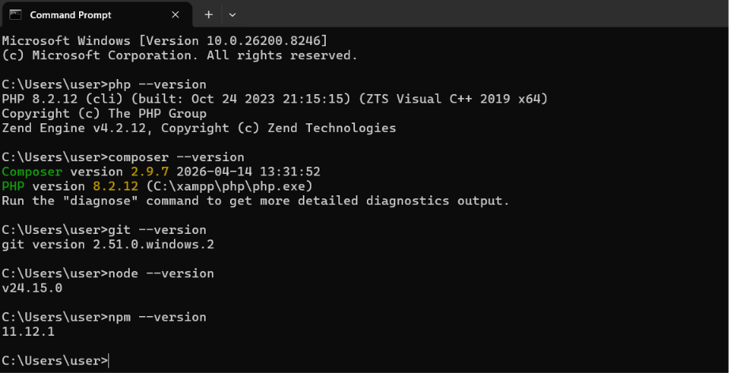
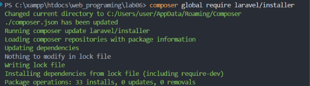
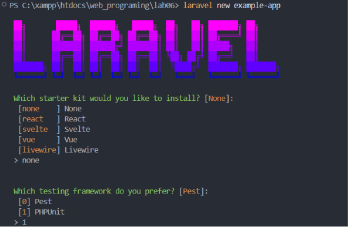
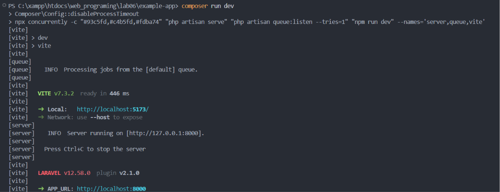
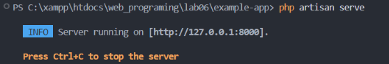
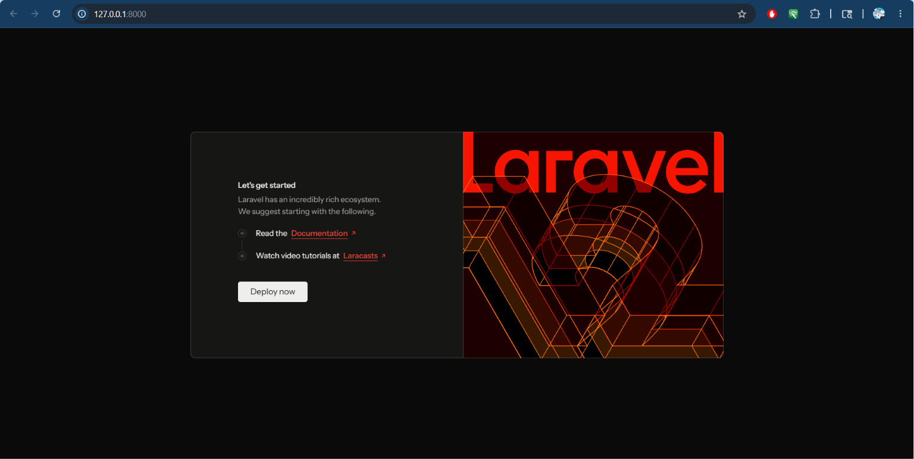
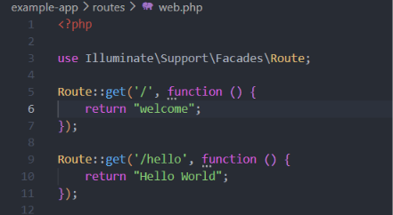
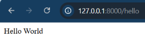

Persyaratan Sistem & Instalasi Tools
Sebelum memulai membuat proyek Laravel, kita harus menyiapkan terlebih dahulu lingkungan development. Laravel memiliki persyaratan minimal sistem sebagai berikut:
Langkah Instalasi:
- Install XAMPP: Install XAMPP pada apachefriends.org. Setelah terinstal akan muncul folder baru htdocs pada \xampp\htdocs. XAMPP secara otomatis menginstal Apache, PHP, dan PHP MyAdmin.
- Install Composer: Install composer melalui getcomposer.org/Composer-Setup.exe, lalu instal sesuai langkah wizard. Composer berfungsi sebagai package manager untuk PHP.
- Install GIT: Install git pada git-scm.com/downloads/win.
- Install Node JS dan NPM: Install Node JS melalui nodejs.org, lalu lakukan instalasi sesuai wizard. NPM terinstall otomatis bersama Node JS.
Cek Versi:

Membuat Projek Laravel
Membuat projek laravel dapat dilakukan melalui installer atau menggunakan composer. Disini saya menggunakan installer. Langkah pertama gunakan perintah composer global require laravel/installer.

Setelah itu buat projek baru menggunakan perintah: laravel new example-app. Ikuti langkah instalasi hingga selesai.

Konfigurasi dan Build Projek
Setelah selesai membuat projek laravel, selanjutnya masuk ke dalam directory projek Laravel, lalu masukan perintah berikut:
cd example-app
npm run build
npm install
composer run devcd example-app berfungsi untuk berpindah ke folder example-app. npm install berfungsi untuk memerintahkan NPM membaca file package.json dan mengunduh seluruh library yg dibutuhkan ke dalam folder node_modules.

composer run dev berfungsi sebagai alat optimalisasi Developer Experience (DX). Dengan satu perintah sederhana, developer menghidupkan mesin back-end (server dan antrean) dan mesin front-end (Vite HMR) secara paralel. Ini memastikan bahwa ketika developer mengubah kode PHP, mengubah style CSS, atau mengirim email asinkron melalui sistem antrean, seluruh perubahannya dapat langsung terlihat dan diproses tanpa harus me-restart layanan apa pun secara manual.

Running Project
php artisan serve berfungsi untuk menyediakan server instan untuk pengujian lokal. Akses http://127.0.0.1:8000 yg ditampilkan tersebut untuk memastikan Laravel berjalan dengan baik.


Membuat Rute Baru
Selanjutnya, kita akan coba untuk print Hello World. Masuk ke folder routes lalu masuk ke file web.php. Buat sebuah rute baru /hello.

